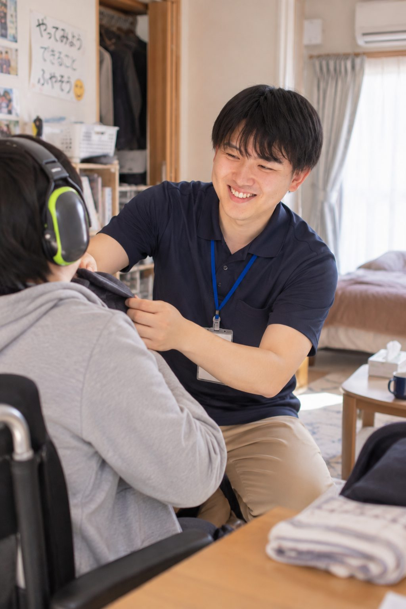
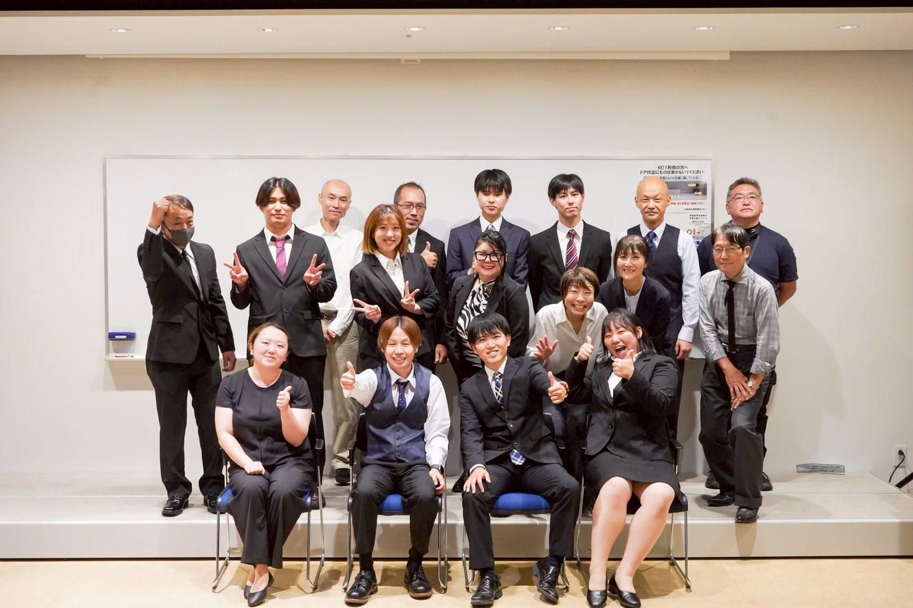
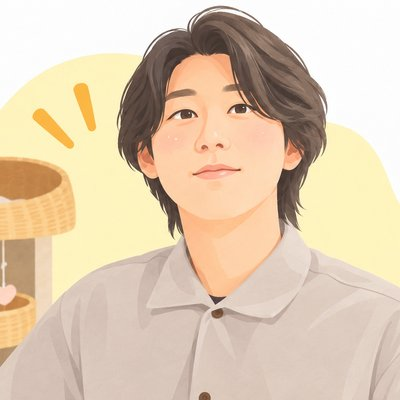
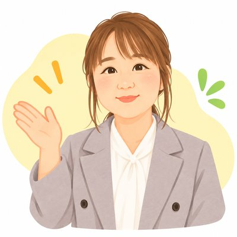

01
希望休が取りやすい
休日は原則として、本人の希望に基づいて決定します。希望日が集中した場合は、スタッフ間で相談・調整を行います。
休みたい日を、ちゃんと相談できる。

福祉の経験・資格を活かして、
訪問介護という働き方へ。
どちらもLINEにつながります。転職を決めていなくてもOK。
Worries
その経験、
訪問介護で活かせます。ひとつでも当てはまったら、続きを読んでみてください。

About
訪問介護は、障がいのある方のご自宅や地域に訪問し、一人ひとりの生活に合わせた支援を行う仕事です。
NewValleyは障がい福祉サービスを中心としており、利用者様一人ひとりに寄り添った支援を大切にしています。
5 Reasons
01
休日は原則として、本人の希望に基づいて決定します。希望日が集中した場合は、スタッフ間で相談・調整を行います。
休みたい日を、ちゃんと相談できる。
02
訪問と訪問の間に発生する移動・待機などの時間も含めて、スタッフが無理なく働ける時間の使い方を大切にしています。
訪問と訪問の間も、大切な時間。
03
最初から、
一人にしない。
訪問介護が初めての方でも安心できるよう、最初は一人での支援ではありません。経験のあるスタッフとペアで訪問し、実際の支援を見ながら仕事を覚えていきます。
「一人で訪問するのが不安」という声に、いちばん応えたい約束です。
04
買い物、外食、余暇活動、通院、地域への外出など。利用者様の「やりたい」「行ってみたい」を実現する支援があります。
介護するだけじゃない。その人の「やりたい」を一緒に叶える。
05
NewValleyは障がい福祉サービスを中心としています。訪問する利用者様は障がいのある方が中心で、高齢者の割合は1割未満です。
その人の「暮らし」と「これから」に、長く関われる。
横にスワイプして見る
Numbers
14人
直近1年の入社人数
4割
未経験からスタートした人
100%
希望休の取得率
事業拡大中。
だから、若手の昇格が多い。
NewValleyは今年で11年目。今期は放課後等デイサービスを2店舗オープン予定で、グループホームや生活介護の開設準備も進んでいます。新しい事業所が増えている今だからこそ、経験を積んだ人にどんどん役割を任せています。
3人とも、現在の年収は500万円を超えています。
Interview
前職も、転職の理由も、それぞれ。カードをタップすると詳しい話が読めます。
A Day
サービスは24時間365日。シフトによって1日の形はさまざまですが、あるスタッフの1日の一例です。自宅から直行・直帰で、事務所に立ち寄る必要はありません。
Honestly
正直にお伝えします。良いことばかりではありません。訪問介護には、施設とは違う大変さがあります。
その場で判断する場面があり、施設のようにすぐ隣に同僚がいるわけではありません。
一人ひとりの生活・特性・希望に合わせるため、覚えることも配慮することも人によって変わります。
訪問先の間を移動します。天候や交通の影響を受けることもあります。
支援の内容をきちんと記録し、チームに共有することも大切な仕事です。
だからこそ、
NewValleyではサポートします。
一人で抱え込まないための仕組みを、次のセクションで紹介します。
Support
「一人で訪問」に不安があるのは当然です。だから、慣れるまでの道のりを一緒に歩きます。
最初は経験のあるスタッフと一緒に訪問します。
先輩スタッフから仕事を学べる環境があります。
介護の資格は入社後でも大丈夫。運転免許（原付可）があれば未経験からスタートでき、資格取得を会社としてサポートします。
困ったときに相談できる体制があります。
10代から60代以上まで、
幅広い年代が活躍しています。
Requirements
東京都町田市／神奈川県大和市・海老名市・相模原市 とその周辺
事業所：東京都町田市金森3-23-1 2F（最寄駅：成瀬駅）。事務所勤務ではなく、自宅から利用者様のご自宅・地域へ直行直帰。社用車での移動もあります。
障がいのある方（高齢者の割合は1割未満）のご自宅や地域で、食事・入浴等の生活支援や外出支援を行う仕事です。未経験者も歓迎。利用者様の地域生活を支えます。
主な業務
社用車を使用した外出支援も多く、利用者様の「やりたい」「行ってみたい」を実現する支援を大切にしています。
フルタイム（週40時間）
月給273,500円〜737,500円
| 基本給 | 185,000円〜355,000円 |
|---|---|
| 基本手当 | 10,000円〜25,000円 |
| 職能手当 | 6,000円〜255,000円 |
| 精勤手当 | 10,000円 |
| 業務手当 | 25,000円〜36,000円 |
| 会議手当 | 10,000円 |
| 移動手当 | 26,000円 |
| 通信手当 | 500円 |
| 資格手当 | 1,000円〜20,000円 |
短時間社員（週32時間・月138時間程度目安）
月給218,900円〜（金額応相談）
| 基本給 | 148,000円 |
|---|---|
| 基本手当 | 8,000円 |
| 職能手当 | 4,800円 |
| 精勤手当 | 8,000円 |
| 業務手当 | 20,000円〜 |
| 会議手当 | 8,000円 |
| 移動手当 | 20,800円 |
| 通信手当 | 500円 |
| 資格手当 | 800円〜16,000円 |
| 家族手当 | 扶養家族1人につき月額5,000円 ※子どもは18歳未満まで対象 |
|---|---|
| 早朝・深夜勤務 | 割増手当あり |
週40時間で働く場合（フルタイム）
月給273,500円〜
年収の目安
短時間社員として働く場合（週32時間）
月給218,900円〜
※実際の支給額は、勤務時間・経験・資格・担当業務により異なります。面談時に個別にご説明します。
試用期間中も給与・待遇の変更はありません（フルタイム・短時間社員とも）。
各種社会保険完備（フルタイム・短時間社員とも）。
シフト制（時間応相談）
訪問の合間に待機・移動時間が発生する場合があります。
休日は、原則として本人の希望に基づいて決定します。希望日が集中した場合は、スタッフ間で相談・調整を行います。
フルタイム（週40時間）：契約社員としてスタート。入社後6か月の勤務状況や勤務態度を確認し、管理者との面談のうえで正社員へ昇格となります。
短時間社員（週32時間）：契約社員
FAQ
ここに無いことは、LINEで気軽に聞いてください。
Steps
LINEを送ったあとに何が起きるか、先にお伝えします。転職を決めていなくても、1から始めて大丈夫です。
1
「応募」「見学」「仕事内容」「給与」から選んで送るだけ。気になることを気軽に聞いてください。

SNS・メッセージ対応：米沢2
訪問介護なので見学できる施設はありません。その代わり、事務所で業務内容や働き方を直接お話しします。履歴書をお持ちください。

面談当日の担当：湯村3
最初は一人での支援ではありません。経験のあるスタッフとペアで訪問し、実際の支援を見ながら仕事を覚えていきます。
まだ転職すると決めていない方も、
まずは話を聞いてみるだけでOKです。
LINEでは「応募」「見学」「仕事内容について聞きたい」「給与について聞きたい」から選べます。